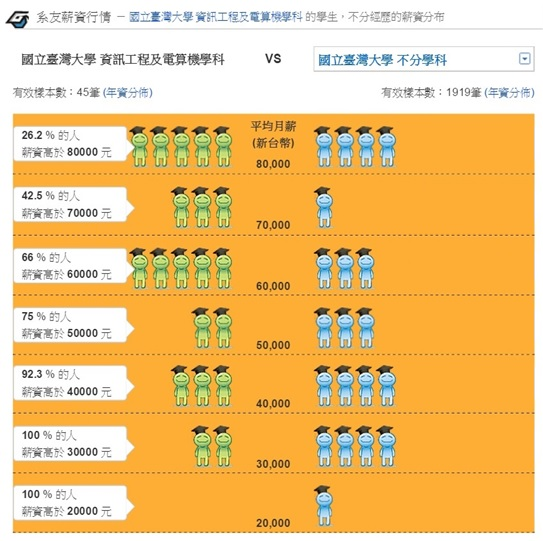

落點分析結果 (依薪資排序)
分析方法
- 按校系代碼會連結簡章頁面
- 按學校名稱會連結學校首頁
- 按科系名稱會連結科系首頁
- 按薪資會連結104升學就業地圖
- 今年篩選倍率紫色代表有異動
- 去年最低級分紅色代表未達標
全國落點排序
| 校系代碼 |
校名 |
科系名稱 |
畢業校友平均薪資 |
今年篩選倍率 |
去年通過倍率篩選最低級分 |
| 請輸入條件來進行落點分析 |
| 分析結果僅供參考，請自行判斷是否採納本站建議，本站不負考生錄取與否之連帶責任。 |
職涯型落點分析方法
一、資料來源
- 薪資資料: 104升學就業地圖-系友薪資行情
- 如某校系沒有薪資資料，則將該校系的平均薪資視為0
- 薪資資料更新時間: 2020/02/21
- 學測分數: 大學甄選委員會網頁
- 科系資料
- 以今年度大學甄選委員會網頁個人申請校系分則中的校系為基礎
- 刪除去年度篩選倍率只採計總級分的校系
- 刪除去年度沒有招生的校系
- 刪除採計術科的校系
- 刪除採計APCS檢測的校系
- 刪除有性別限制的校系
二、平均薪資計算
- 將(薪資級距x該級距人數百分比)加總
- 舉例: 台灣大學資訊工程系平均薪資 =
$80000 x 26.2% +
$70000 x (42.5% - 26.2%) +
$60000 x (66% - 42.5%) +
$50000 x (75% - 66%) +
$40000 x (92.3% - 75%) +
$30000 x (100% - 92.3%)
= $60200

三、落點分析流程
- 將考生輸入的各科成績依照本學年度「學測各科級分人數百分比累計表」換算成百分數
- 根據前一學年度「學測各科級分人數百分比累計表」將各科的百分數換算為前一學年度的各科成績
- 找出各科加1級分後高於前一學年度通過倍率篩選最低級分的校系
- 刪除未達最低薪資之校系
- 刪除所在縣市條件不符之校系
- 刪除公/私立條件不符之校系
- 將符合校系依薪資由大到小排序
×
輸入資料！取得甄試必勝秘笈
備審資料的眉眉角角那麼多，怎麼做才能前進理想大學？
輸入下列資料，讓我們把甄戰必勝秘笈寄給你
還會抽出30位幸運得主，可以再獲得「大學甄選教戰手冊」暢銷書一本！
Step 1 - 請驗證您的手機號碼，簡訊驗證通過方可取得抽獎資格
各位同學：
隨著大學學測成績公告，此刻的你（妳）一定在看著落點分析結果發愁，正在憂慮著自己該如何下手準備備審資料。
中華大學特別與甄戰名師俞征武教授合作拍攝影片，特別節錄出大家製作備審資料時，最關注的三個重點，歡迎同學一起為自己加值：
【秘笈1：備審資料常見Q&A】
【秘笈2：備審資料怎麼做才能100分】
【秘笈3：備審資料不能犯的NG狀況】
另外，我們為了要讓各位同學掌握全方位的甄試必勝秘訣，即日起至3月2日（星期一）18時止，凡登錄索取者，我們將於3/2（星期一）晚間19時抽出30位幸運得主，可以再獲得「大學甄選教戰手冊」暢銷書一本。

如果有任何問題，歡迎搜尋LINE ID【@chu1990】或點選網址（https://lin.ee/jg0XKan）加入好友，小編線上隨時給你諮詢服務，讓你贏在起跑點！
謹祝各位同學 金榜題名、甄戰必勝
中華大學敬上
×